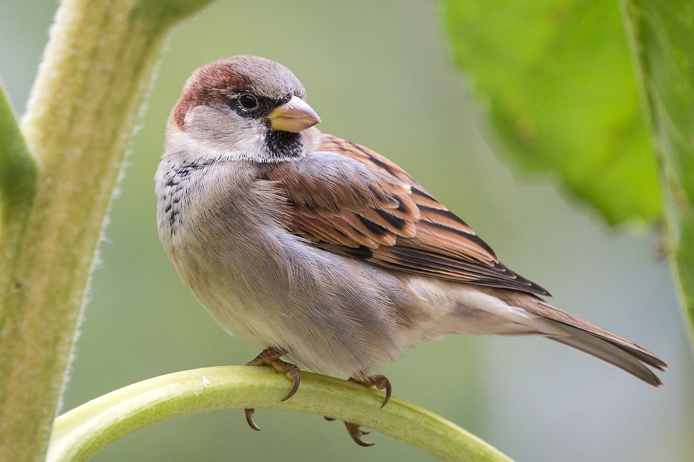
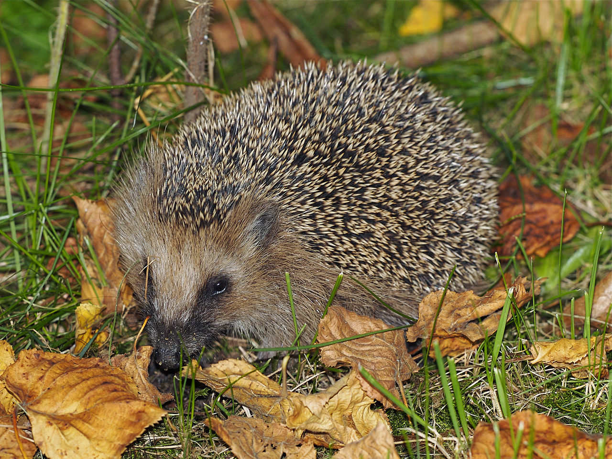

Воробей
это небольшая птица из семейства воробьиных,
широко распространённая в городах, деревнях
и сельской местности по всему миру.
Воробей легко адаптируется к жизни рядом с человеком.
Воробьи имеют компактное тело длиной около 14–16 см,
короткий клюв, приспособленный для поедания семян,
и скромное оперение — у самцов чаще более яркое,
с коричневыми и серыми оттенками, а у самок — более тусклое.
Они питаются зерном, семенами, насекомыми и остатками человеческой пищи.
Воробьи живут стайками, строят гнёзда в укромных местах и известны своей энергичностью и голосистостью.
Ёж Европейский
это небольшое млекопитающее,
широко распространённое в Европе и некоторых частях Азии.
Он имеет характерные иглы на спине (модифицированные волосы)
которые служат защитой от хищников. Ёж ведет ночной образ жизни,
активно охотится в сумерки и ночью. В рационе ежа преобладают насекомые,
черви, моллюски, но он может также питаться мелкими позвоночными и падалью.
Ёжи впадают в спячку на зиму, чтобы пережить холодные месяцы,
замедляя свой метаболизм. Они предпочитают жить в лесах, парках и садах,
часто обустраивая себе укрытия из листвы и веток.
Желто-синий Ара
это крупный и яркий попугай из тропических лесов
Центральной и Южной Америки. Его оперение имеет характерную
окраску: насыщенно-жёлтое тело и синие крылья и спина,
а также белое лицо с чёрными полосками. Длина птицы достигает
85–90 см, включая длинный хвост, а вес — около 1–1,5 кг.
Ары живут парами или небольшими стаями, отличаются громким голосом
и высокой сообразительностью. Они питаются фруктами, орехами и семенами,
используя мощный клюв для раскалывания твёрдых скорлуп.
Капибара
это самое
крупное из современных грызунов. Она обитает в Южной Америке,
преимущественно вблизи водоёмов. Внешне капибара напоминает большую морскую свинку:
у неё массивное, вытянутое тело длиной около 1-1,3 метра,
короткие конечности, коричнево-рыжий окрас и крупная голова.
Капибары ведут полуводный образ жизни и отлично плавают. Они часто проводят
время в воде, чтобы избежать хищников и охладиться в жару.
Их рацион состоит в основном из травы и водных растений.
Капибары живут стадами, обычно от 10 до 20 особей, и являются социальными животными.
Они миролюбивы, что делает их популярными в зоопарках и даже иногда как домашних питомцев.
Лягушка древесная
это небольшие лягушки, которые
обитают на деревьях или кустарниках в различных регионах мира,
включая Северную и Южную Америку, Европу и Азию. Эти амфибии известны
своей способностью лазать по вертикальным поверхностям благодаря специальным
подушечкам на пальцах, которые выделяют клейкое вещество для лучшего сцепления.
Большинство древесных лягушек имеют зелёную, коричневую или серую окраску,
которая помогает им сливаться с окружающей средой, защищаясь от хищников.
У некоторых видов есть способность изменять цвет в зависимости от условий.
Рацион древесных лягушек состоит из насекомых, мелких беспозвоночных и иногда
других небольших животных. Они ведут ночной образ жизни и часто издают
громкие звуки для привлечения партнёров в брачный сезон.